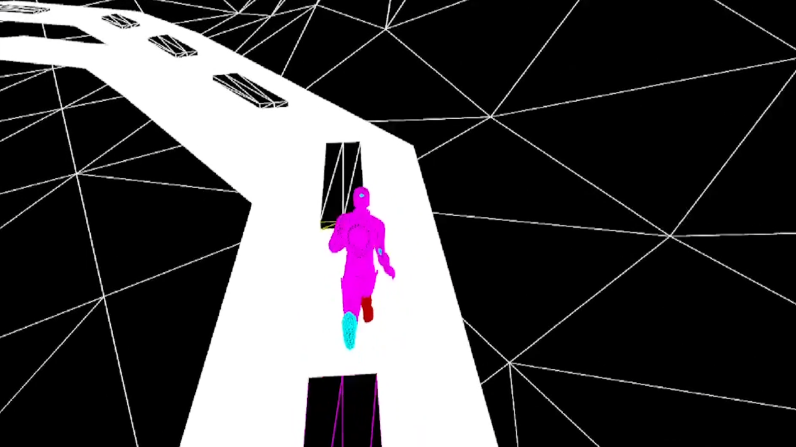

Learnerunner
Generation of an IA learning to run
This project aimed at learning a bot how to run. With this game, I had to become familiar with neural networks or genetic algorithms. In order to fully understand those two notions, I decided to implement them both within the same AI project.
My algorithms worked together : a brain was randomly generated, this brain took 3 inputs. This inputs are the distance at wich the end of the road is. The neural network computes the infos with different weights on the neurones on 3 differents layers.

The brain returns 2 elements : The speed at wich the character must go, and the direction it must turns toward. When a character hits the end of the road, he dies. When a whole generation dies, a new is created, they are the "sons" oof the best runners. With some generations, the bots leared how to run.